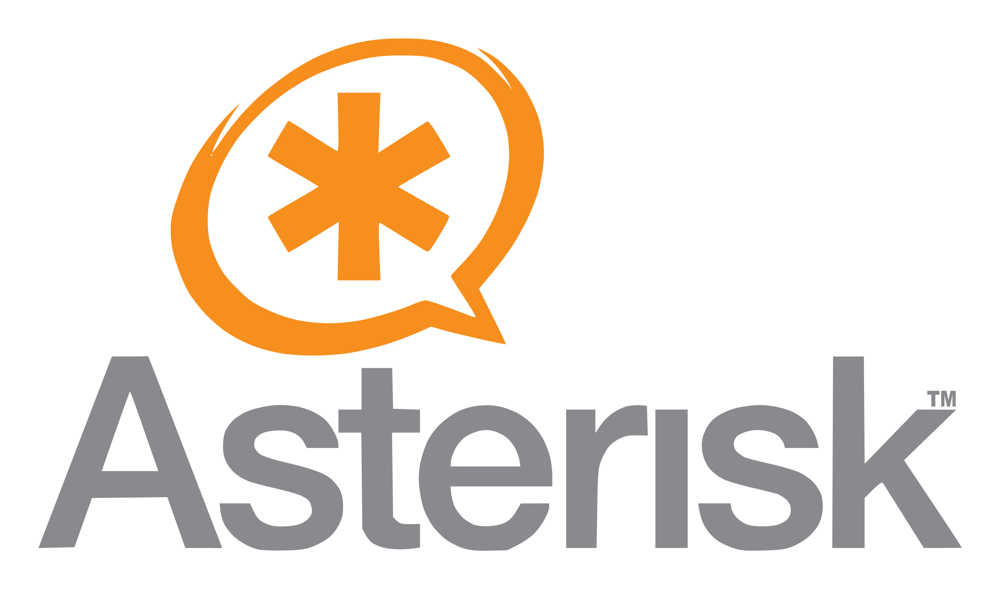
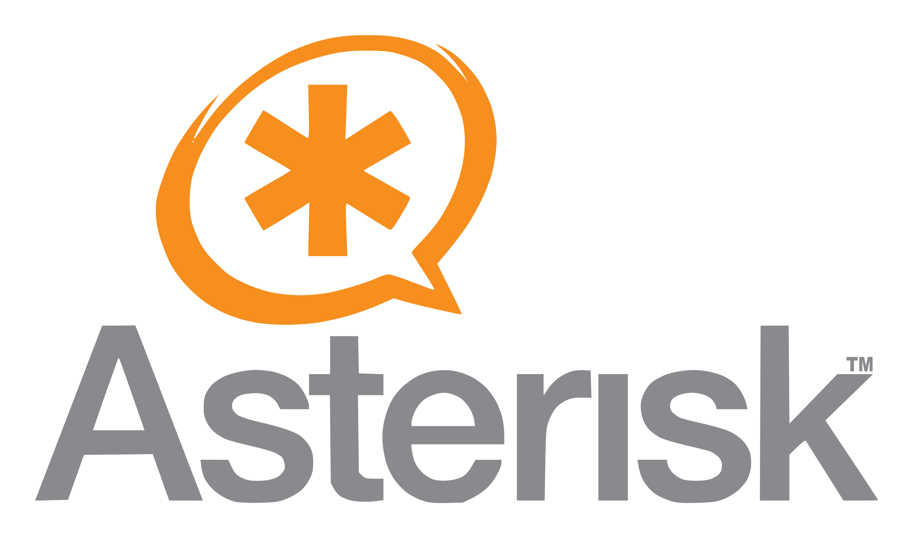
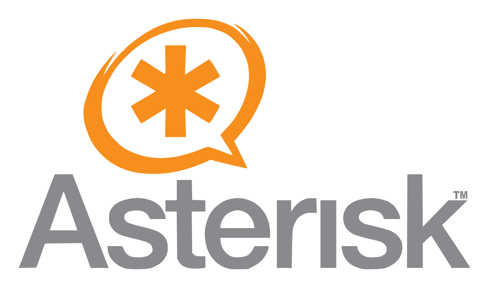

IA + Asterisk
Vem ver!
Este projeto é uma automação escrita em SHELL para instalar e configurar o Asterisk v13 no sistema
operacional Raspbios (Raspberry)
Ver projeto no GITHUB

 

Ver projeto no GITHUB

IA + WhatsApp
Vem ver!
Projeto desenvolvido para auxiliar as demandas de pedidos da empresa "Madruga's Burguer" via Whatsapp.
Ver projeto no GITHUB

Ver projeto no GITHUB
NodeJS + Asterisk
Vem ver!